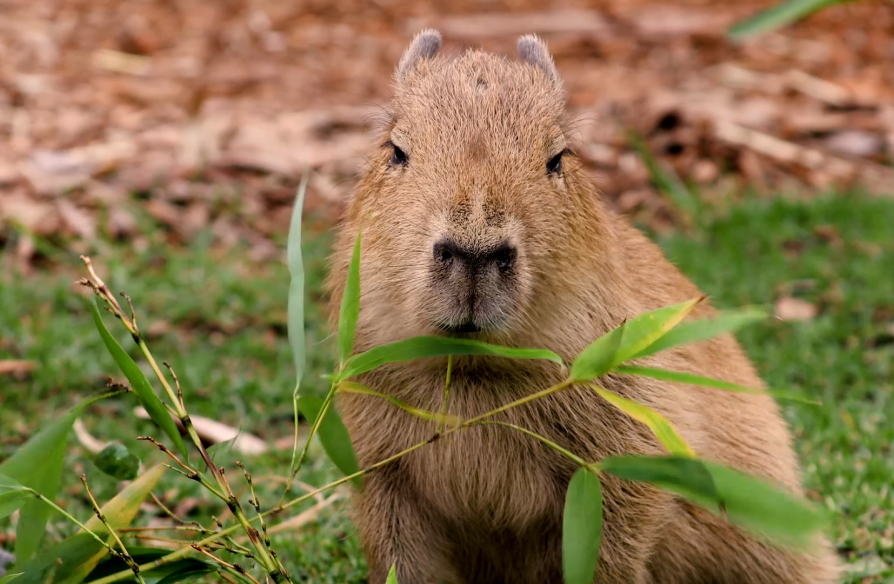
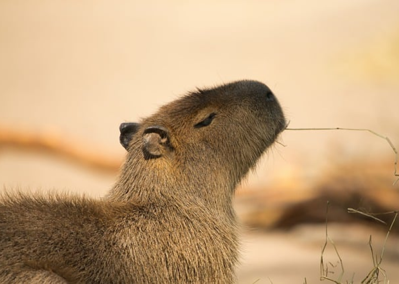
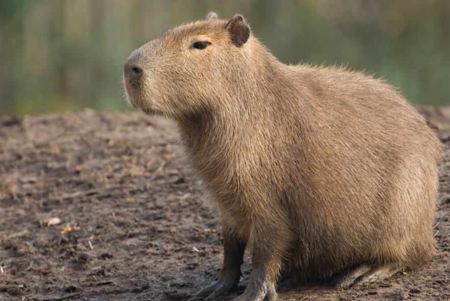

About Capybara
The capybara is the largest rodent in the world and a social animal that lives in groups. They are very friendly and are commonly found in riverbanks and swamps in South America.
Capybaras are commonly found in many zoos around the world. They are the largest rodents in the world, native to South America, and are often kept in zoos due to their gentle and sociable nature.
You can find capybaras in large zoos such as:San Diego Zoo in California, USA,Bronx Zoo in New York, USA,...
Capybara Facts
- Capybaras can weigh up to 66 kg (146 lbs).
- They have webbed feet for swimming.
- Capybaras are highly social animals and live in groups of 10-20 individuals.
Capybara Images



Capybara related products
To buy capybara pillow, visit the click here page.
To buy capybara keychain, visit the click here page.